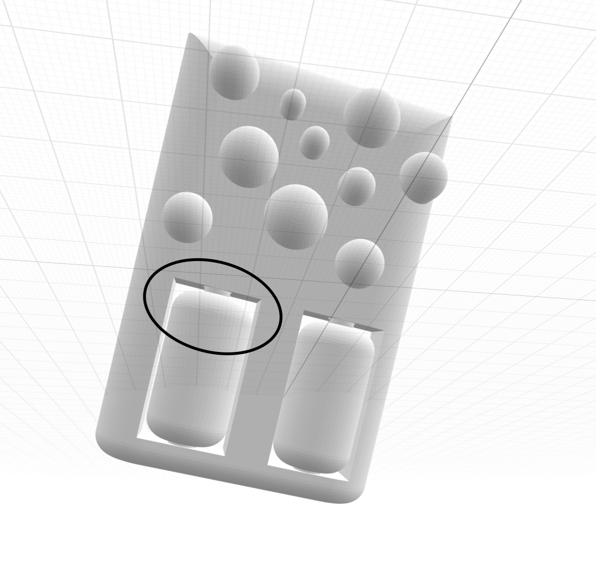
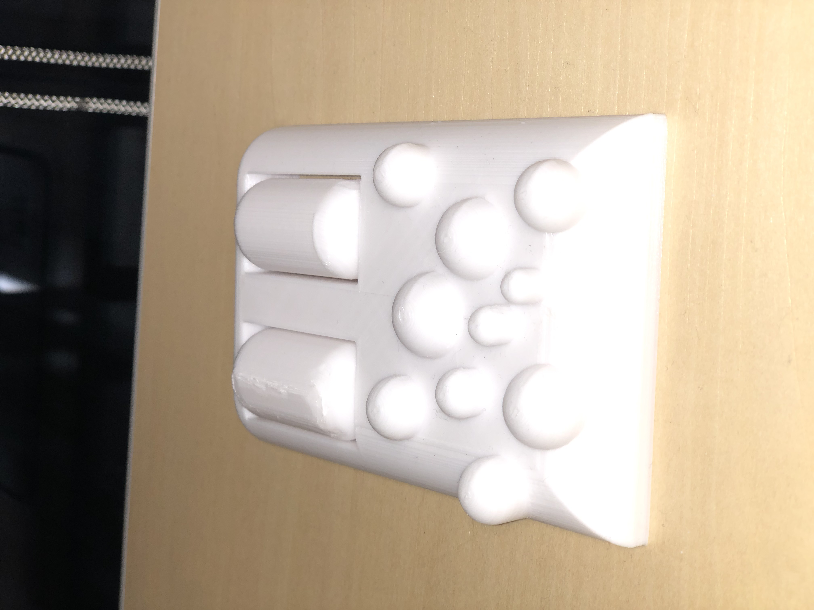

足ツボ
・私生活で使う足ツボを３Dプリンターで作ってみた。
・ボツボツによるほぐし方もあるが、ローラーもついているので、足を転がすこともできる。
・体重がかかり破損することも考えると、丸い形にして力を分散させる必要があると思い、このようなデザインになった。
解説

・このように、間が空いている。これは、プリント後に少し力を入れて回すと簡単に回るようになる。
３Dプリンターでは、地面や周りと離れていると「サポート」という不要なものがつく。
これは、積層構造である３Dプリンター特有の現象で、サポートが多すぎることで、見た目が悪くなったり、ゴミが増えてしまう。
今回は、サポートを最小限に抑え、見た目への影響はほとんどない。
完成品

動画